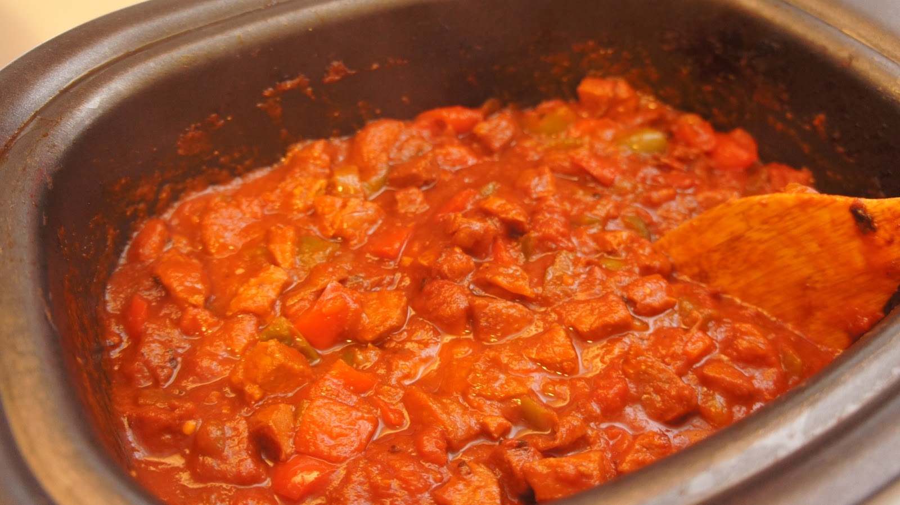

Home Page

Description :
Here is a simple recipe for Portuguese style chourico & peppers. It can be prepped and cooked within an hour, and here's how it's done.
Ingredients :
- 2 lbs chourico cut into small pieces
- 2 green peppers (chopped)
- 2 large onions (chopped)
- 1 clove of garlic (chopped)
- 1 medium can of tomato sauce
Steps :
- Mix all the ingredients together
- Cook for about 30 mins with a stove top or slow cooker.
Return to Top